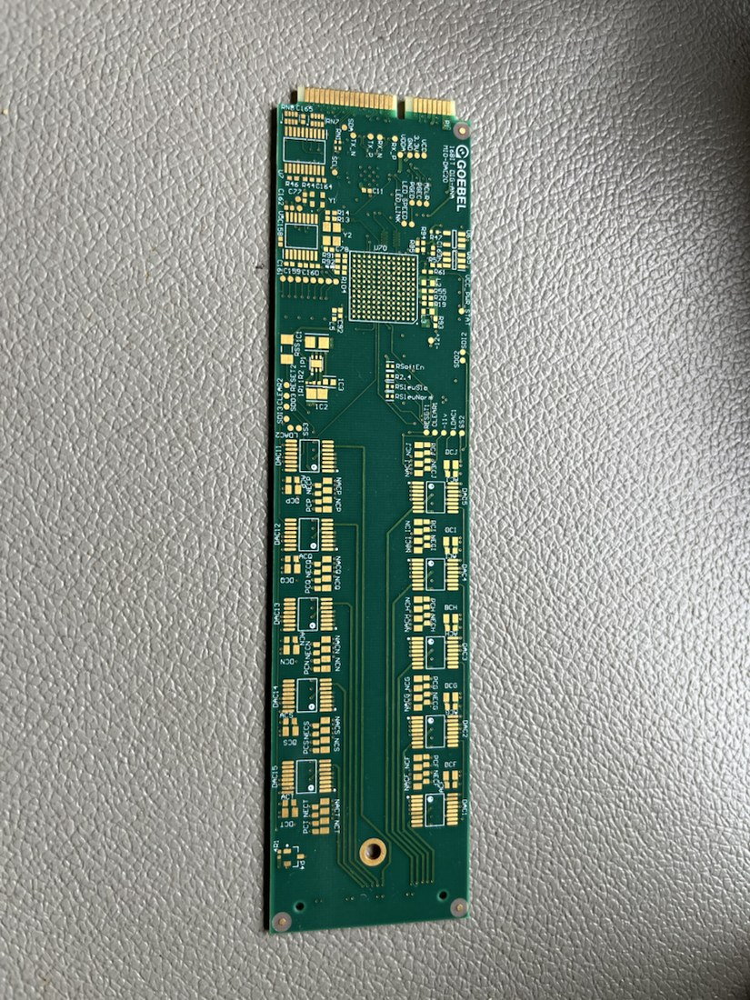

Electronics Design Internship
MIO-DAC20 Board + Manual
Electronics documentation and design-support work for a multi-channel DAC product, including Altium cleanup, PCB review, and interface docs.

My work
Cleaning up hardware files and making the board supportable.
- NeedMake a complex multi-channel DAC board easier to review, validate, document, and support.
- ReviewCheck schematic/library cleanup items, net naming, PCB documentation details, and board presentation.
- DocumentConnect the physical board to connector pinouts, REST control, UDP commands, and programming examples.
- SupportLeave artifacts that help engineers understand the product beyond the raw schematic and layout files.
At Goebel Instrumentation Solutions, I supported the MIO-DAC20 workflow by cleaning Altium schematic issues, reviewing library and net-name problems, checking PCB documentation details, and helping prepare design files for handoff, validation, and long-term support.
The user manual documents board configuration, connector pinouts, HTTP REST control, UDP command structure, and programming examples. My work helped make the hardware easier to understand, validate, troubleshoot, and support beyond the schematic and layout files.
Open manualPhotos
Board-level context.